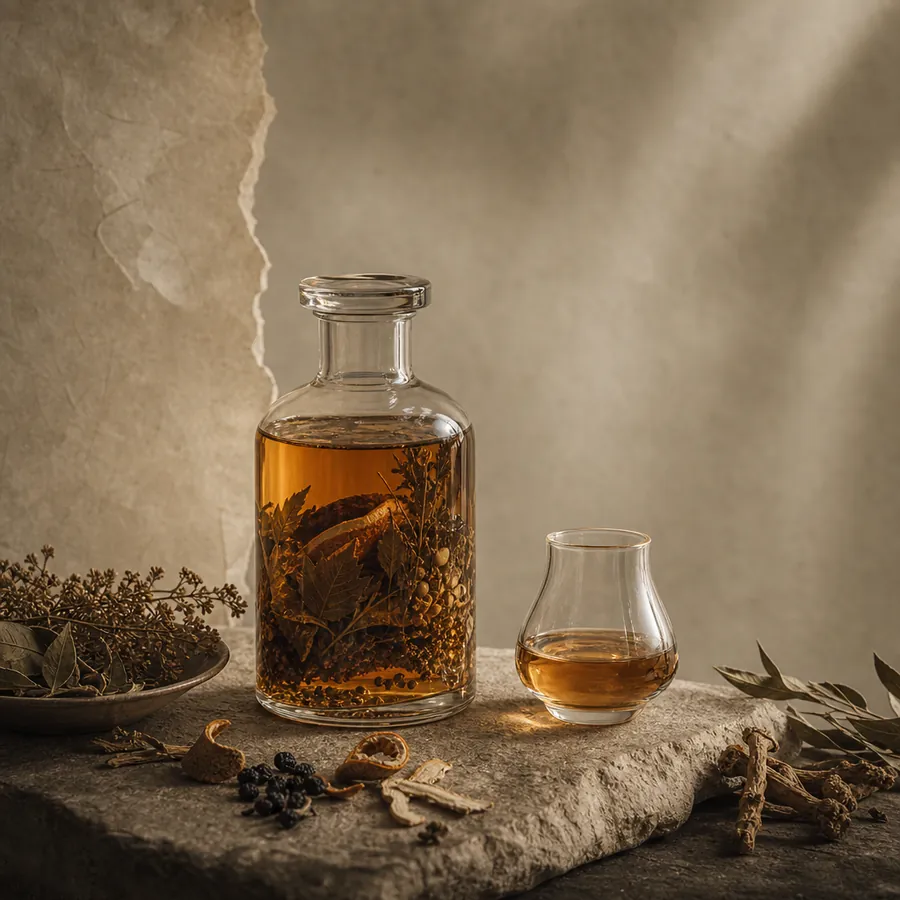
Brand Story
观素，起初只是想留下草木最安静的部分。
不是初摘时的青涩，也不是久煎之后的浓重。
而是它在时间里慢慢松开的气息：一点清，一点苦，一点温润的回甘。
酒只是承接它的方式。让植物不止被闻见，也被含在口中，被更缓慢地感知。 观素因此而生。
我们取草木，不为喧哗地言说它的力量，只想保留它的节制、质地与余韵。 像器物经手，像香气落下，一切都不必太满，却要足够久。
草木入酒，时间成味。

不是初摘时的青涩，也不是久煎之后的浓重。
而是它在时间里慢慢松开的气息：一点清，一点苦，一点温润的回甘。
酒只是承接它的方式。让植物不止被闻见，也被含在口中，被更缓慢地感知。 观素因此而生。
我们取草木，不为喧哗地言说它的力量，只想保留它的节制、质地与余韵。 像器物经手，像香气落下，一切都不必太满，却要足够久。
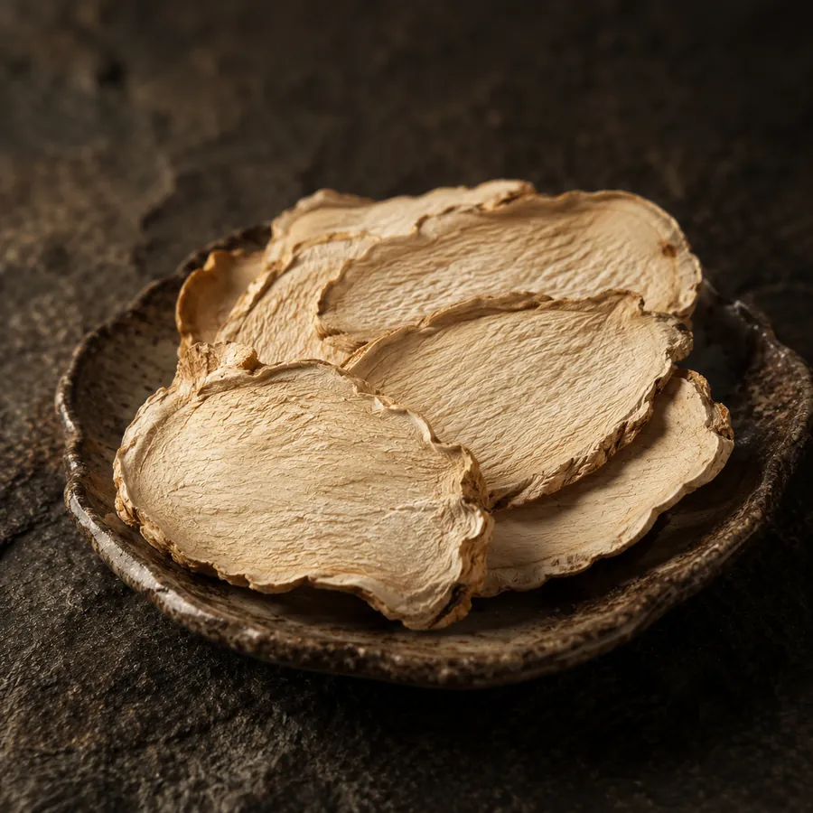
黄精切片
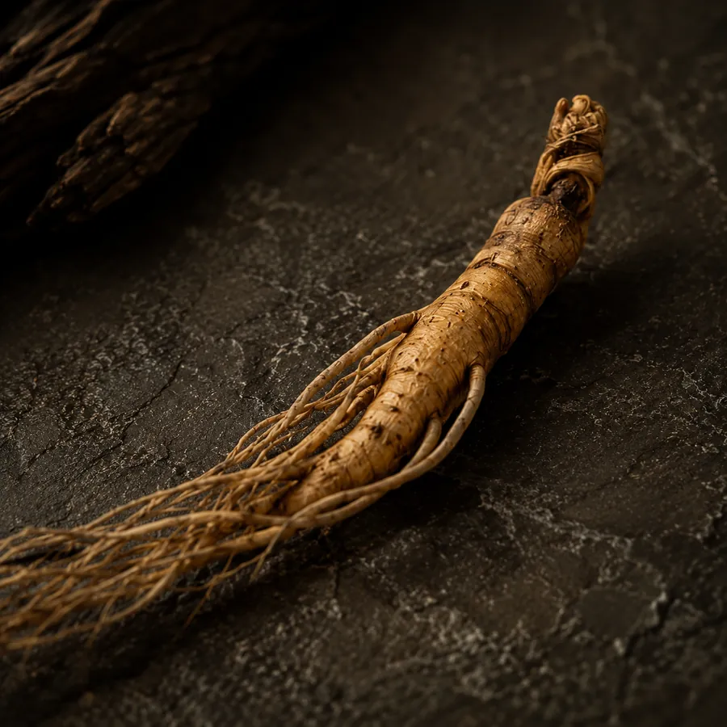
林下参
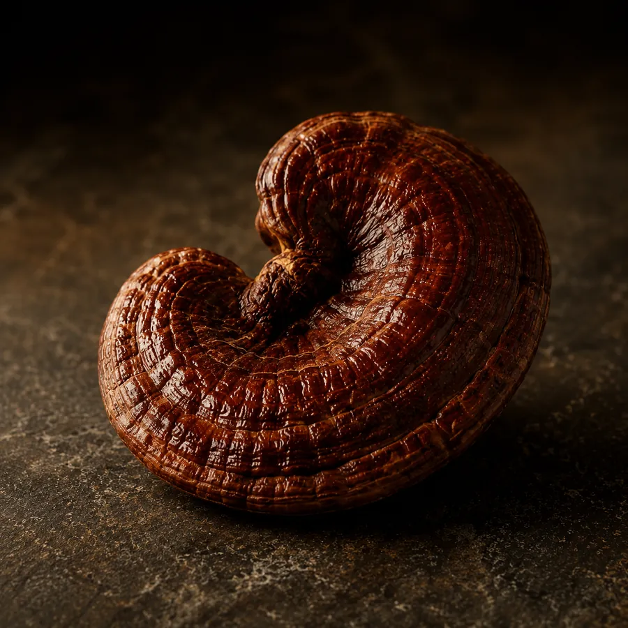
桑黄
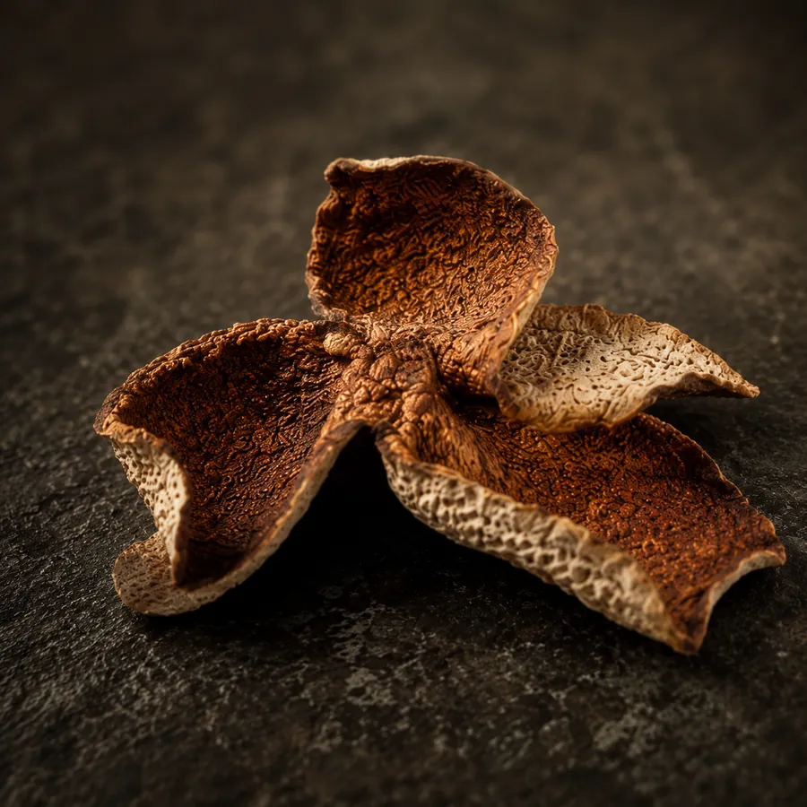
陈皮

12% Vol.
青年线的低度草本微醺，写夜晚、放松、审美和分享欲。

42% - 52% Vol.
更成熟的宴席与礼赠线，写分寸、体面、待客和饭桌气质。

15% Vol.
更温和的家庭陪伴线，写安心、日常、父母礼与说得出口的关心。
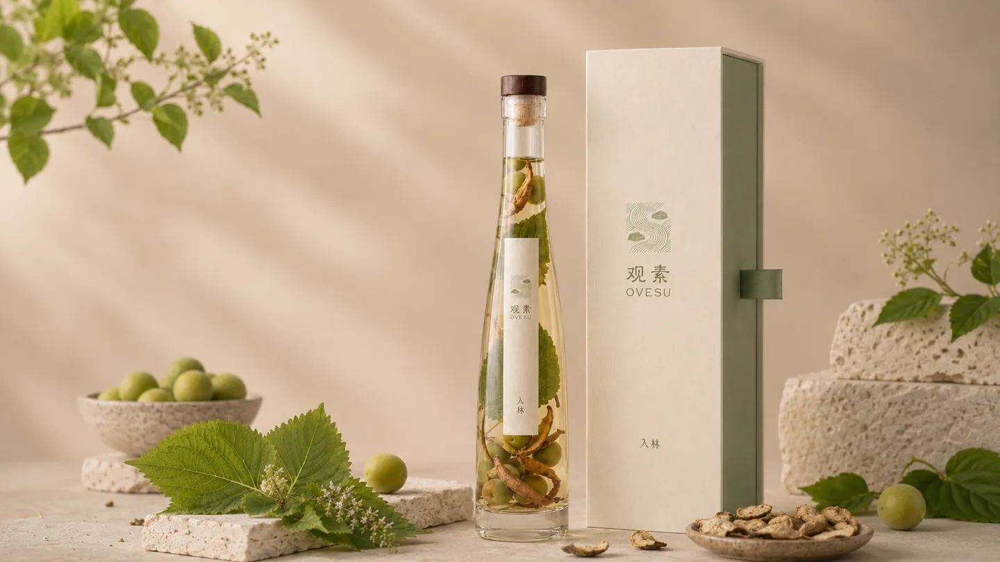
微澜系列
清气先至。
青梅、紫苏与陈皮，
在口中留下明净的回响。
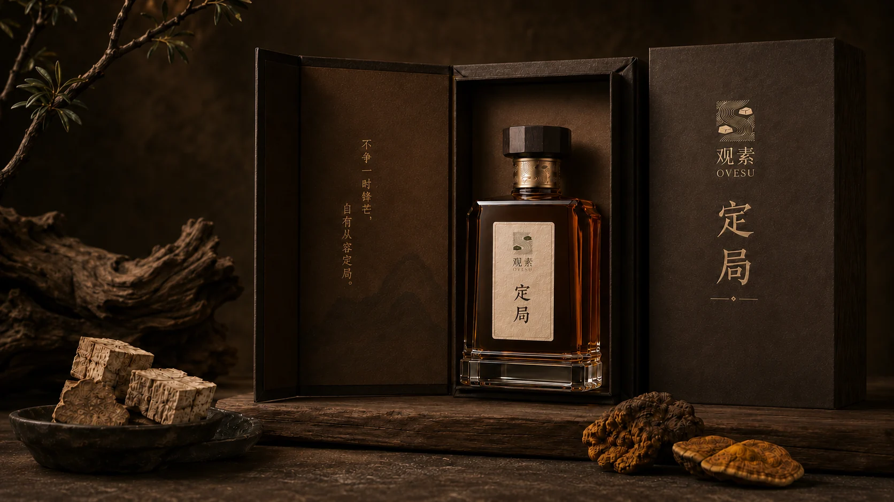
藏山系列
桑黄与葛根收住酒体的锋芒，
留下更沉静的木质与余韵。
适合光影落低之后的正式时刻。
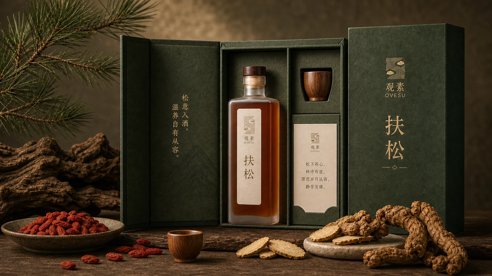
松年系列
杜仲、九蒸九晒黄精与宁夏枸杞，
收成一杯木质温润的长辈礼。
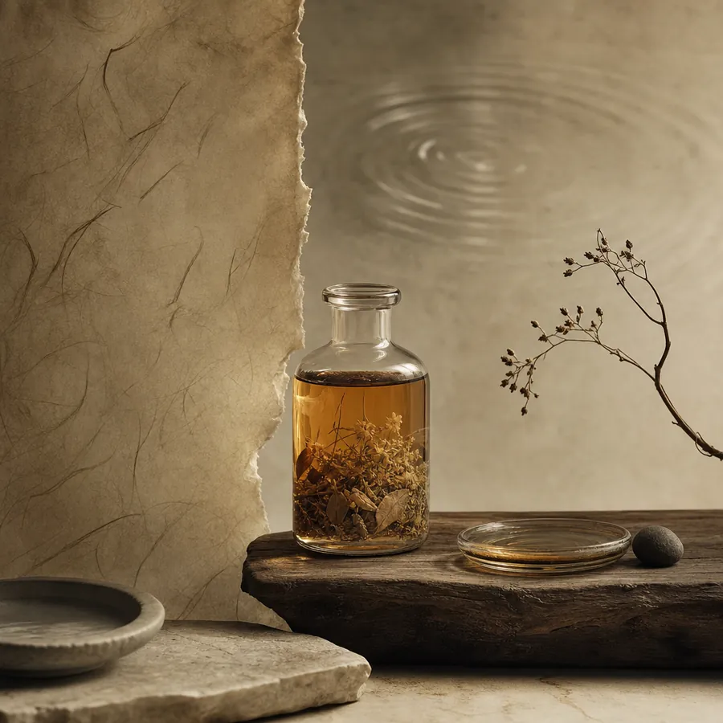
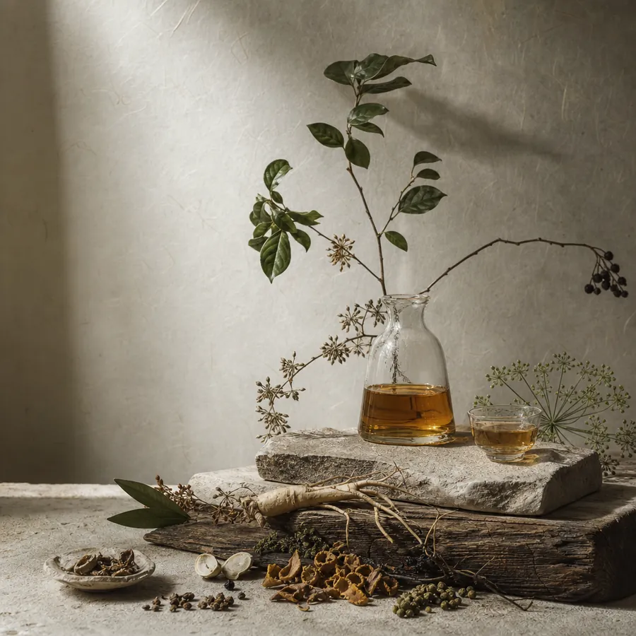
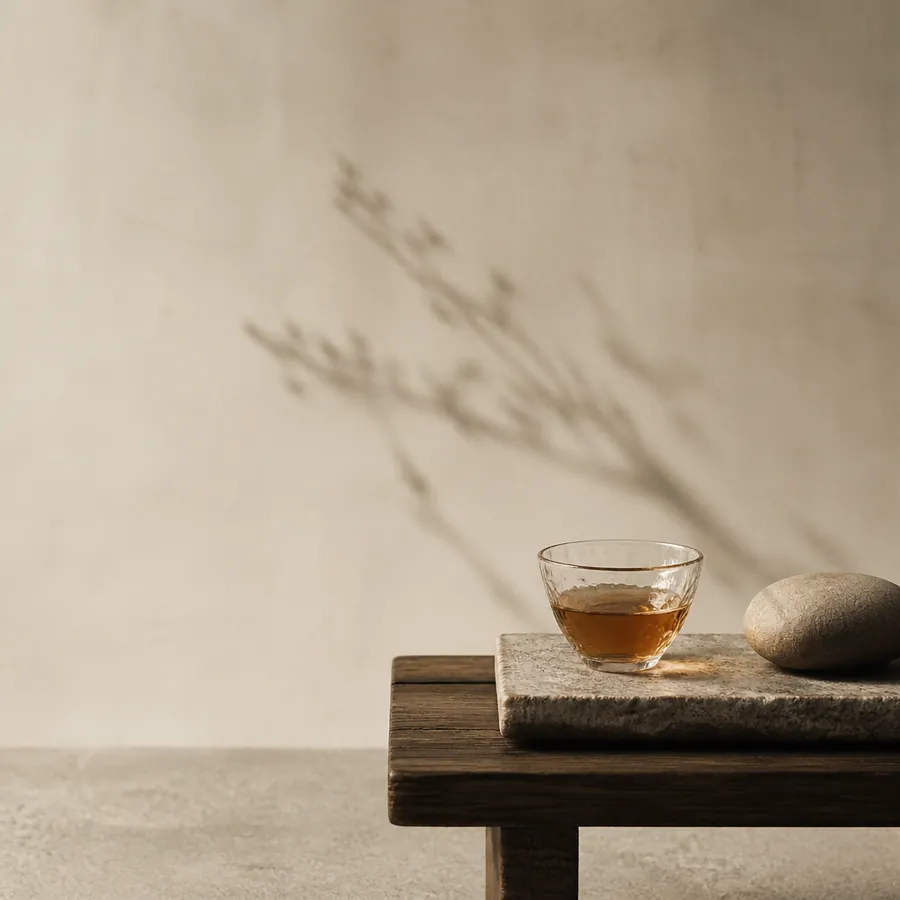
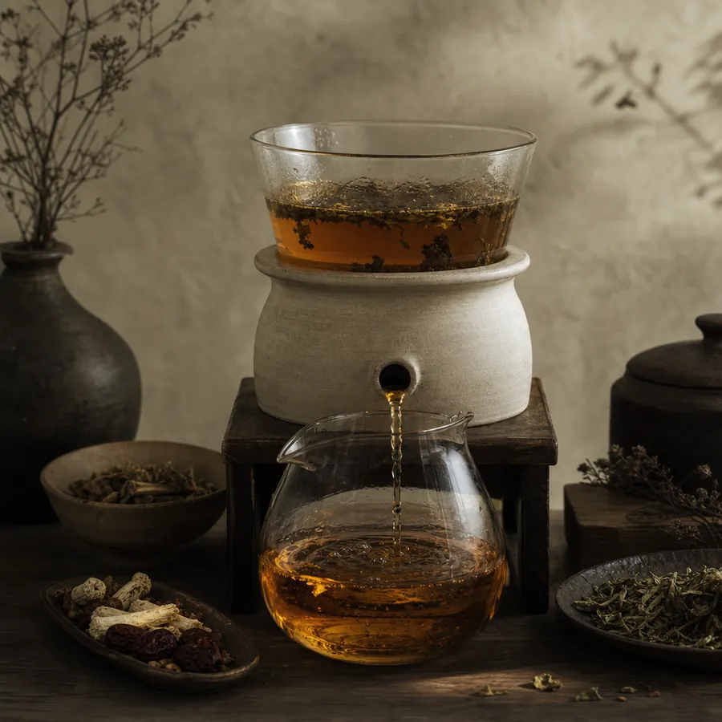
在观素，
草木的气息、酒体的余韵，
与递出时的心意被安静地放在一起。